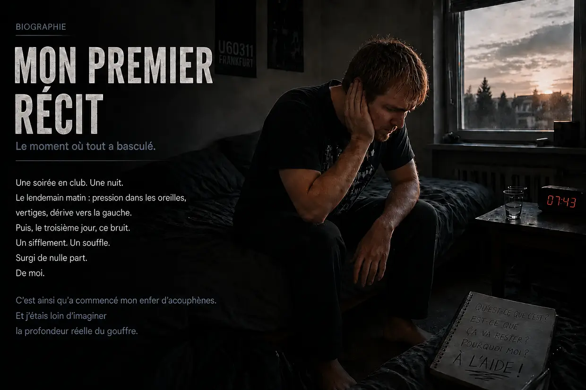
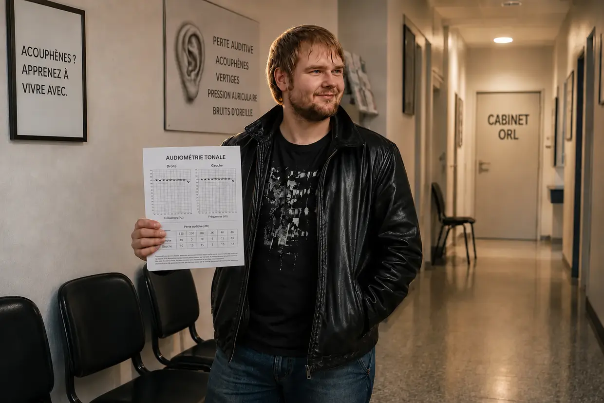

Comment je suis sorti de l’enfer des acouphènes (version courte)
Bonjour, je m’appelle Dustin Müller.
Si vous venez d’arriver sur cette page, vous vous trouvez probablement dans le même enfer que moi à l’époque. Toute l’histoire — chaque visite chez l’ORL, chaque audiogramme, chaque percée — est dans ma biographie en deux parties. Ici, c’est la version courte : comment j’ai fait passer mes acouphènes de 100 à 0. Deux fois.
1. Automne 2011 : la discothèque
J’avais 23 ans, j’étais en parfaite santé et je pensais que mon corps pouvait tout encaisser. Mon cousin m’a convaincu d’aller pour la toute première fois en discothèque, à l’U60311 de Francfort. Naïf comme j’étais, je me suis installé à la meilleure place libre : à tout juste six à huit mètres des enceintes, pendant quatre heures. En sortant, une pression folle dans les oreilles, tous les sons étouffés comme sous l’eau. Le lendemain matin, je suis retombé sur mon oreiller, entraîné violemment vers la gauche. Je me suis dit : avec le temps, ça va se régler.
Le troisième jour, je me suis réveillé en entendant un bip comme celui d’un réfrigérateur. J’ai cherché du côté de la prise, du réveil, de l’ordinateur. Puis j’ai plaqué les mains sur mes oreilles. Ça venait de moi. À gauche, un bourdonnement, un souffle, des sirènes et un bip puissant — à droite, un bip faible.
2. Six ORL
Sur Internet, on lisait : perte auditive soudaine, lésion de l’oreille interne, à traiter dans les 14 jours, sinon cela devient chronique. Direction l’ORL. Le premier m’a dit : « Ouiii, n’y prêtez pas attention, écoutez un peu de musique » — et il est sorti de la pièce. Après l’audiométrie, il m’a expliqué que mon audition était endommagée de façon permanente et que je devais apprendre à vivre avec. Le deuxième m’a prescrit du ginkgo et trouvait le casque « utile pour se distraire ».
J’ai suivi le conseil, écouté de la musique le soir et du bruit blanc la nuit — et quelques semaines plus tard, j’ai subi une deuxième perte auditive soudaine. Sur le trajet vers l’école, l’autoradio à volume élevé, puis en cours, une distorsion des sons, une hypersensibilité douloureuse et un demi-salto dans la tête : ma vision s’est mise à tourner, puis j’ai eu des vertiges avec une sensation de tangage et j’étais entraîné vers la gauche. La troisième médecin m’a proposé des antidépresseurs. Le quatrième, un spécialiste des acouphènes, m’a expliqué que le bruit était dans ma tête. Six ORL en tout. Aucun n’a pu m’aider. J’ai écourté ma propre fête d’anniversaire parce que je ne comprenais plus personne, interrompu ma scolarité et je suis resté isolé chez moi.
3. L’aspirateur à l’hôpital universitaire
Puis un hasard a tout changé. À cause d’une inflammation du conduit auditif, je me suis traîné en pleine nuit à l’hôpital universitaire de Francfort. Le médecin a nettoyé mes conduits auditifs à l’aide d’un petit aspirateur — et à cette seconde précise, mes acouphènes se sont mis à hurler dans l’oreille gauche, agressivement, immédiatement. Puis la même chose à droite. La théorie du « tout est dans la tête » ne pouvait donc pas tenir : un fantôme dans la tête ne réagit pas en temps réel au vacarme dans l’oreille. La source était toujours là, en bas. Encore assis sur le fauteuil, j’ai décidé de découvrir ce qui se passerait si j’évitais systématiquement le bruit.
4. Le silence

J’ai reçu des perfusions de cortisone et, à cause de l’inflammation, d’épaisses bandes de gaze dans les deux oreilles. Et les acouphènes ont baissé. Au début, je me suis dit : c’est la cortisone. Puis ça a fait tilt : mes oreilles avaient été complètement coupées du monde extérieur pendant des jours. Quelques jours plus tard, la preuve — une détonation directement dans l’oreille, les acouphènes se sont mis à hurler, MAIS ils sont revenus à leur niveau en quelques secondes. Ils n’étaient pas quelque chose de figé. Ils réagissaient au bruit.
J’ai donc vécu des mois dans un silence presque absolu : pas de musique, pas de casque, aucun bruit du quotidien, et à un moment donné, même plus d’horloge qui faisait tic-tac dans la chambre. Le son a baissé d’environ 25 % (au ressenti, bien sûr — on ne mesure pas des acouphènes avec une règle). Puis il n’a plus bougé. Mon corps était bloqué. Mâchoire, nuque, correction de l’atlas : j’ai tout essayé, rien n’a marché.
5. La vitamine B12
La percée est venue du salon. Mon père s’injectait de la vitamine B12 à cause d’une maladie des nerfs — une petite ampoule de liquide rouge — et il allait visiblement mieux. Je me suis renseigné : la B12 est la vitamine des nerfs, et les végétariens atteints de gastrite sont à risque. J’étais les deux. Mon analyse de sang : un taux tout juste au-dessus du seuil de carence. Mon généraliste : « encore dans la norme », pas d’injections.
J’ai donc demandé à mon père de m’en faire une le soir, vraiment pas rassuré. (Important : je déconseille expressément de reproduire cela sans accompagnement médical.) Le lendemain matin, mes acouphènes avaient baissé d’un bon 40 %. J’étais allongé là, au bord des larmes. Et j’ai compris : c’est une question d’énergie. Sur le site du Dr Wilden, il était écrit que son laser stimulait la production d’énergie des cellules — l’ATP. Le corps a précisément besoin de B12 pour cela.
6. La lécithine : le matériau de construction
Au fil de la journée, le son redevenait pourtant toujours plus fort. Puis une colique biliaire, à l’hôpital en pleine nuit ; la médecin voulait opérer, je suis rentré chez moi à mes risques et périls. (Important : en cas de calculs biliaires, demandez impérativement un accompagnement médical — je raconte ici mon expérience tout à fait personnelle dans une situation aiguë, pas un conseil thérapeutique.) Un forum m’a mis sur la piste des granulés de lécithine, 30 grammes. Trois jours plus tard, mes acouphènes avaient soudain atteint 60 à 65 % d’amélioration.
Pourquoi ? La lécithine est un matériau de construction pour l’enveloppe des nerfs — la gaine de myéline — et pour chaque membrane cellulaire. C’est précisément cette dernière que le bruit endommage, « un peu comme lorsque la protection en plastique d’un fil électrique fin est détruite ». Aïe : il ne s’agit pas seulement d’énergie, mais aussi de matériaux de construction.
7. La guérison définitive
Avec le complexe B complet — B1, B2, B6, B9, B12 en injection, B3, B5, B8 en comprimés — je suis passé à 80 %. Puis j’ai fait le plein : 30 grammes de lécithine, des acides aminés, 3 grammes d’oméga-3, de la vitamine C, des minéraux (zinc, magnésium), des concentrés de micronutriments (LaVita, Dr. Rath). Et toujours le silence.
La disparition progressive

Le son était plus faible le matin, les rechutes du soir plus courtes. D’abord, il disparaissait jusqu’à midi, puis jusqu’à l’après-midi. Jusqu’à ce matin où je me suis réveillé, où j’ai enfoncé mes bouchons bien au fond des oreilles pour vérifier — et où il n’y avait rien. Après presque deux ans. Mon corps avait réparé ça lui-même.
C’était le premier épisode d’acouphènes. Ce qui a suivi, c’était le véritable enfer — et, des années plus tard, l’expérience la plus folle de ma vie.
Remarque importante :
ce que vous lisez ici est mon témoignage personnel. Chaque corps et chaque histoire sont différents.

La chute dans le SFC et le flush de niacine
La réaction en chaîne dévastatrice : la chute dans le SFC
Si vous pensez qu’après la guérison de mon premier épisode d’acouphènes, tout allait bien, vous vous trompez. Cet effondrement qui menaçait ma vie n’était toutefois pas le « prix » de cette guérison, mais une réaction en chaîne dévastatrice qui a complètement déséquilibré mon système.
À l’époque, je vivais à fond : peu de sommeil, beaucoup de travail, toujours sous tension. À court terme, j’avais l’impression d’avoir de l’énergie. Je ne me rendais pas compte que je vidais mes réserves.
Un mélange d’un traumatisme de fond non résolu, de séquelles chimiques de la cortisone, de cette surexcitation cellulaire incessante et d’un intestin complètement détruit par des antibiotiques agressifs (et des inhibiteurs de l’acidité) m’a définitivement fait perdre pied.
Lorsque le virus d’Epstein-Barr (à l’origine de la mononucléose infectieuse) s’en est mêlé, mon système s’est complètement effondré. Le diagnostic : syndrome de fatigue chronique (SFC). J’ai été presque cloué au lit pendant plus d’un an. Les mitochondries (les centrales énergétiques des cellules) ont presque entièrement cessé de produire de l’énergie (ATP).
L’impasse à 6 800 euros et ma plus grande arrogance

Dans mon désespoir, j’ai acheté tout et n’importe quoi. Des poids lourds américains comme Life Extension ou Thorne aux coûteuses perfusions de vitamine C, en passant par les traitements de la KPU et les traitements hormonaux substitutifs. J’ai essayé un entraînement simulé en altitude (IHHT), que j’ai dû interrompre à cause de la panique, et j’étais à deux doigts d’être admis dans une clinique spécialisée dans le SFC.
Rien que cette année-là, j’ai englouti, sans exagérer, environ 6 800 euros dans cette folie. Le résultat ? Absolument rien. Mon corps ne répondait à rien.
L’ironie tragicomique : pendant mes recherches nocturnes, je suis tombé sur le site de l’entreprise allemande FitLine. J’y suis resté exactement quatre ou cinq secondes, j’ai vu la présentation et j’ai pensé avec une arrogance totale : « Mais c’est quoi, ce nom débile pour une boisson sportive à la mode ? J’ai besoin de vraie médecine, pas de jus colorés. » Je n’ai absolument pas vu la garantie de remboursement à 100 %. Mon ego et mes connaissances superficielles m’ont coûté de nombreux mois supplémentaires dans l’enfer du SFC.
En 2013 : le flush de niacine et le redémarrage cellulaire
Au point le plus bas, en 2013, j’étais alité à 98 %. C’est alors que YouTube a fait remonter dans mon fil la vidéo d’un Heilpraktiker qui expliquait les choses dans une perspective incroyablement globale, avec une vraie maîtrise du sujet. Lorsque j’ai vu qu’il se trouvait à seulement 30 kilomètres de chez moi, je m’y suis traîné avec mes dernières forces, car ma mère refusait désormais catégoriquement de me conduire chez d’autres médecins.
Il m’a préparé une poudre délayée dans de l’eau — un liquide orange vif. C’était exactement le kit FitLine que j’avais balayé avec arrogance quelque temps auparavant !
Ce qui s’est produit au bout de six à huit minutes était de la folie pure : cela a déclenché un flush de niacine massif. Une chaleur extrême s’est répandue dans tout mon corps, un afflux sanguin gigantesque a déferlé dans mes veines et ma peau a rougi. Pour la première fois depuis plus d’un an, j’ai ressenti une véritable énergie physique dans mes cellules.
Le vrai problème : mon corps était pris dans un triple blocage. Premièrement, mon système gastro-intestinal était complètement déséquilibré par le stress permanent et les antibiotiques (dysbiose). Deuxièmement, mon intestin manquait tout simplement d’énergie cellulaire (ATP) pour digérer des gélules solides. Et troisièmement, mes cellules étaient tellement acidifiées par leur mode d’alimentation énergétique de secours anaérobie qu’elles ne laissaient presque plus entrer de nutriments. J’étais affamé au niveau cellulaire malgré des assiettes pleines.
Ce kit de nutriments liquide et hautement biodisponible a soudain fait sauter cet énorme blocage de l’absorption.
J’ai mis mon orgueil de côté et, à partir de ce moment-là, j’ai pris les produits tous les jours, avec constance. Les résultats étaient presque surréalistes :
- Après 20 jours : je pouvais de nouveau monter les escaliers tout à fait normalement.
- Après 2 mois : je n’étais plus cloué au lit et je pouvais de nouveau faire du vélo avec énergie.
- Après 3 à 4 mois : j’ai suivi un cours d’informatique sans effondrement physique.
- Après un peu moins de 2 ans : j’étais en meilleure forme physique que jamais et je travaillais pour REWE Online dans un boulot physique extrêmement dur — en enchaînant même volontairement deux services d’affilée !
L’expérience la plus folle de ma vie

Après le SFC, une idée ne me lâchait plus : lors de mon premier épisode d’acouphènes, je n’avais presque aucune énergie et j’avais dû m’enfermer pendant six mois dans une chambre silencieuse. Que se passe-t-il si mon corps, maintenant, avec cette énergie extrême, est de nouveau frappé par le bruit ? Est-ce qu’il se répare alors, pour ainsi dire, « en roulant », au beau milieu du quotidien ?
⚠️ Remarque importante : avant de décrire cette expérience, je tiens à préciser que j’aurais aussi pu subir des dommages permanents. Ne faites cela sous aucun prétexte.
J’ai pris une décision que n’importe quel médecin aurait jugée absolument folle : j’ai provoqué délibérément un deuxième épisode d’acouphènes afin de prouver ma théorie sur mon propre corps.
À l’époque, j’ai complètement abandonné toutes les précautions qui me protégeaient et fait la fête sans retenue (d’une part parce que je voulais précisément tenter l’expérience et, d’autre part, parce que je ressentais encore en moi une immense soif de vivre — ma guérison du SFC remontait à quelques années). Cette nuit-là, je n’ai ressenti qu’un signal d’alerte temporaire (une sensation de pression). Mais c’est précisément ce signal qui m’a poussé à aller jusqu’à l’extrême. Pendant des semaines, j’ai bombardé mes oreilles de musique forte au casque de manière excessive — même lorsque l’écoute était déjà devenue une pure douleur physique. Ça faisait mal, et j’ai continué.
Jusqu’à ce soir précis : j’étais assis devant mon ordinateur, j’ai mis mon casque — et, dans le silence soudain, j’ai entendu un léger bip dans l’oreille gauche. Le son était revenu. D’un côté, une terreur à l’état brut ; de l’autre, une fascination délirante.
Pour que le son ne disparaisse pas aussitôt pendant mon test, j’ai pris une décision risquée : j’ai complètement interrompu mon protocole de nutriments (abstinence) et volontairement arrêté mon kit FitLine ainsi que ma lécithine.
Le crash, la panique et mes preuves en direct
Il a fallu un mois et demi à deux mois pour que mon système finisse par s’effondrer sous cette provocation permanente et sans son bouclier protecteur. Les acouphènes sont revenus brutalement, à 75 % du volume sonore de mon tout premier épisode d’acouphènes. Ils s’accompagnaient d’un chaos sonore entièrement nouveau : un bip sinusoïdal typique, un étrange signal en code Morse, un souffle grave et une sirène.
Le soir, allongé dans mon lit, la réalité m’a frappé de plein fouet. Les sons étaient si assourdissants qu’une panique à l’état brut m’a envahi : est-ce que cette expérience débile venait peut-être de ruiner ma vie pour de bon ?
Avant de renverser la vapeur, j’ai encore fait trois tests :
- Le test mâchoire-cou : avec de grands mouvements de la tête et de la mâchoire, je pouvais sans le moindre doute modifier aussi bien la tonalité que le volume du son !
- Le test du bruit blanc (preuve contre le masquage) : pendant deux à trois minutes, je me suis exposé à un bruit blanc extrêmement fort (précisément ce que les médecins recommandent pour le masquage). Lorsque j’enlevais mon casque, un silence de mort absolu régnait pendant quelques secondes, avant que les acouphènes ne se remettent à hurler plus fort et plus agressivement que jamais. Pour moi, c’était la preuve : le bruit blanc force les cellules ciliées malades à pomper des ions sans interruption. Lorsqu’on retire le casque, la batterie de la cellule est totalement vide — elle est physiquement morte et « muette » pendant quelques secondes (période réfractaire). Dès qu’elle recharge un minimum d’énergie, le signal d’urgence revient avec fracas, deux fois plus fort !
- Le test du claquement de mains (choc mécanique) : un claquement sec de mes mains juste devant l’oreille a fait hurler les acouphènes avec rage à cette seconde précise.
La guérison au quotidien (sans « mode moine »)
Le lendemain matin, c’en était assez. L’expérience avait atteint son apogée. J’ai entamé mon retour avec mon « stack » de guérison :
- Le kit FitLine complet (Activize, Restorate, Basics et oméga-3 avec Q10).
- Des granulés de lécithine achetés dans un magasin de produits de soin et du quotidien.
Cette fois, il manquait volontairement une chose très importante : je ne prenais plus aucune poudre amère d’acides aminés ! La raison : lors de mon premier épisode d’acouphènes, je souffrais d’une gastrite chronique sévère et je ne pouvais pas décomposer les protéines provenant d’aliments ordinaires. À présent, des années plus tard, ma digestion fonctionnait parfaitement grâce au rétablissement de mon intestin. Mon système gastro-intestinal sain pouvait maintenant tirer sans problème les acides aminés d’une alimentation normale.
La plus grande différence : je n’avais absolument aucune envie de me couper de la vie comme la première fois. Après ma victoire sur le SFC, ma soif de vivre était tout simplement trop grande. J’ai choisi un compromis intelligent : j’évitais systématiquement les pics de bruit extrêmes — pas d’autoradio à fond, pas de casque, pas de discothèque — mais je ne me retirais pas complètement. Je continuais à faire mes courses, à aller à la fête foraine et au cinéma, et je menais une vie relativement normale.
Le moment « Hein ?! » et le silence absolu
L’impensable s’est produit : dès les premières semaines, entre la deuxième et la troisième semaine, je me suis soudain rendu compte d’une chose : attends… le son réagit déjà !
Les sons devenaient moins forts et plus ténus. D’abord, ce souffle entièrement nouveau dans l’oreille gauche a totalement disparu, puis le sifflement permanent est lui aussi devenu sensiblement plus ténu. Je suis resté assis là, complètement abasourdi, en pensant : « Hein ?! OK, c’est dingue… Je continue en fait à vivre tout à fait normalement, j’évite seulement les gros pics de bruit, et pourtant, ça réagit déjà ?! »
Mon processus de guérison a duré environ trois à quatre mois. Les différentes tonalités se sont éteintes les unes après les autres, de manière systématique :
D’abord, les acouphènes se sont tus à droite et, au bout d’environ deux mois, ils y avaient complètement disparu. Dans l’oreille gauche, la sirène et le grondement profond de camion se sont estompés, jusqu’à ce qu’il ne reste plus que le son sinusoïdal aigu, le boss final.
Comme lors de mon premier épisode d’acouphènes, les heures du matin constituaient l’indicateur décisif. J’avais l’impression qu’un curseur descendait toujours plus vers la ligne zéro. Vers la fin du troisième mois, le son était devenu si faible le soir que je ne pouvais plus le percevoir que si je portais des bouchons d’oreilles dans une pièce totalement silencieuse ou si je restais assis dans une salle de bains elle aussi parfaitement silencieuse.
Pour en finir une bonne fois pour toutes, je me suis encore procuré des gouttes spéciales de vitamine B12, que je déposais chaque jour directement sous ma langue afin de donner au système, par la muqueuse buccale, le tout dernier coup de boost.
Et puis, à un moment donné au cours des semaines suivantes, le son a complètement disparu. Il a disparu. Sans laisser la moindre trace. À 100 %.
J’avais réussi le test le plus fou de ma vie. Et maintenant, je savais avec certitude : la première fois, il y avait eu beaucoup de hasard et de chance. La deuxième fois, non. Les acouphènes avaient disparu parce que j’avais donné à mes cellules ce dont elles avaient besoin — et cela, au beau milieu d’un quotidien normal.
Un mot bref et sincère pour finir (parlons franchement)
Je sais exactement quelle impression toute cette histoire de maladie et de guérison doit donner à quelqu’un qui la découvre de l’extérieur. Si je n’avais pas vécu tout cela dans mon propre corps — la cascade de « coïncidences » absurdes, ma rébellion initiale contre l’ORL, ma chute profonde dans le SFC, les traitements infructueux à 6 800 euros et, enfin, ce moment complètement fou où l’algorithme de YouTube a fait surgir sur mon écran le Heilpraktiker qui allait me sauver, à seulement 30 kilomètres de chez moi… je prendrais probablement moi-même cette histoire pour un scénario hollywoodien à deux sous ou un conte inventé. Cela paraît simplement trop fou pour être vrai.
Mais c’est précisément pour cela que je mets ici toutes mes cartes sur table. Ce récit n’est pas une histoire de guérison inventée, ni un coup marketing, et encore moins de l’ésotérisme sans fondement. C’est une vérité glaciale, physique et cellulaire. Je possède absolument toutes les preuves matérielles de cet enfer et de cette guérison : mes audiogrammes médicaux, qui montrent des pertes auditives massives à certaines fréquences, mes rapports de laboratoire, mes diagnostics et les factures des cliniques et des thérapeutes.
Je ne vous raconte pas tout cela pour vous divertir. Je le raconte parce qu’à l’époque, j’aurais eu besoin d’un site comme celui-ci.
📖 Vous voulez connaître toute l’histoire dans le moindre détail ?
Voilà la version courte en deux actes. J’ai raconté l’histoire complète — chaque audiométrie, chaque visite désespérée chez l’ORL, chaque percée et chaque réaction chimique jusque dans le moindre détail — dans la version longue et détaillée. En deux longues parties, sincères et sans filtre. Préparez-vous un thé. ☕
👉 Voici la version longue : Partie 1 : la traversée de l’enfer · Partie 2 : le test à haut risque